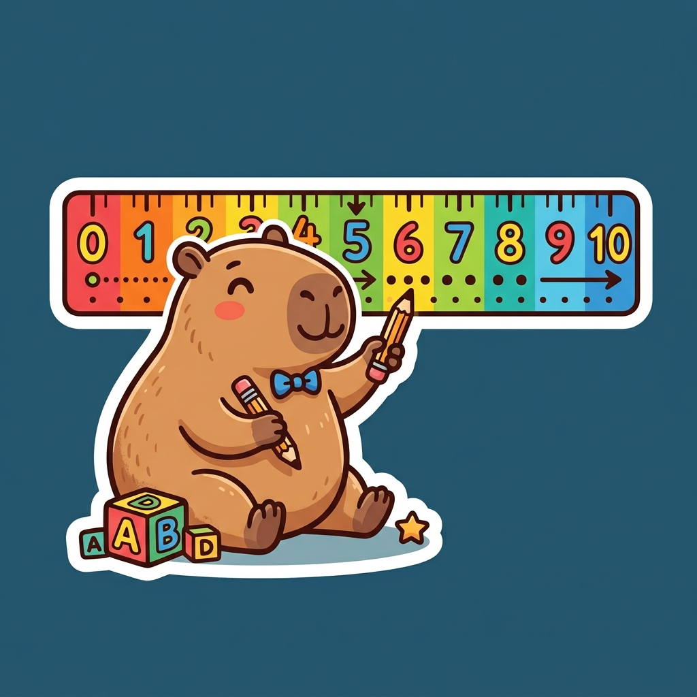

課前暖身漫畫：零下的溫度魔法
水豚店長開了一家超人氣冰淇淋店，正興奮地調整著新冰箱。一起來看看牠在設定溫度時，發現了什麼神奇的數學符號奧秘呢？
重點 1：正數與負數
重點整理與敘述
- 相反物理量：在日常生活中，許多數量的意義是相反或相對的。我們可以用「\(+\)」(正)與「\(-\)」(負)符號來表示。例如：賺與賠、進步與退步、東邊與西邊。
- 性質符號：
- 在數字前面加上「\(+\)」號表示正數（習慣上正號可以省略，如 \(+5\) 寫成 \(5\)）。
- 在數字前面加上「\(-\)」號表示負數（負號絕對不能省略，如 \(-8\)、\(-1.2\)）。
- 數字 0 的定義：數字 \(0\) 既不是正數，也不是負數，是正數與負數的分界點。
- 同號數與異號數：性質符號相同的數稱為同號數；性質符號相反的數稱為異號數。
- 整數的分類：整數包含正整數（自然數，如 1, 2, 3...）、0 與負整數（如 -1, -2, -3...）。
視覺互動探索：溫度計正負模擬
拖曳溫度計滑桿，觀察溫度在高於 0 與低於 0 時的變化，理解正數與負數的記號：
隨堂形成性評量 (觀念挑戰)
Q1. 以中午 12 點為基準，若下午 2 時以「\(+4\)」表示，則上午 8 時以下列何者表示最恰當？
解析：下午 2 時是中午 12 點過後 2 小時，記為「\(+4\)」，代表每過 1 小時記為「\(+2\)」。而上午 8 時是中午 12 點之前 4 小時（相反方向），因此記為 \(-4 \times 2 = -8\)。選 B。
Q2. 下列關於整數的敘述，哪一個是錯誤的？
解析：整數包含了正整數、0 和負整數，其中 \(0\) 既不是正數也不是負數。另外，像 \(-3.5\) 含有小數部分，它是一個負小數，而不是負整數。因此選 D。
重點 2：數線的要素與標記
重點整理與敘述
- 數線三要素：
- 原點：基準點，以字母 \(O\) 表示，代表數字 \(0\)。
- 正向：通常規定向右為正向，並在數線最右端加上單向箭頭。相反方向（向左）為負向。
- 單位長：以適當長度為基準，數線上每一相鄰刻度之間的間隔必須完全相等。
- 坐標表示法：數線上的點可以用一個數來表示其位置，點 \(A\) 表示的數為 \(a\)，則記為 \(A(a)\)。
- 小數與分數標記（等分點）：
- 若坐標為帶分數，如 \(A(-1 \frac{3}{4})\)，則 \(A\) 在 \(-1\) 和 \(-2\) 之間，將此區間分成 4 等分，從 \(-1\) 開始向左數第 3 個等分點即為所求。
- 若坐標為小數，如 \(B(2.3)\)，則 \(B\) 在 \(2\) 和 \(3\) 之間，將此區間分成 10 等分，從 \(2\) 開始向右數第 3 個等分點即為所求。

視覺互動探索：等分點標記儀
切換下方的網格模式，並拖曳數線上的紅點，觀察整數、小數與分數在數線上的正確落點：
隨堂形成性評量 (觀念挑戰)
Q1. 關於畫一條數線的規範，下列哪一個選項的說法是錯誤的？
解析：國中數學定義的數線三要素包含：原點、正向與單位長。數線上只需在右側（正向）加上單向箭頭以示方向，左端（負向）不加箭頭。因此 B 是錯誤的。
Q2. 若要在數線上標記表示 \(-2 \frac{3}{5}\) 的點，下列做法何者正確？
解析：\(-2 \frac{3}{5}\) 的值在 \(-2\) 與 \(-3\) 之間（比 \(-2\) 更往左側偏移）。因此，要在 \(-2\) 與 \(-3\) 的區間內平分 5 等分，並從 \(-2\) 開始往左（負向）數第 3 個等分點。選 A。
重點 3：數的大小與遞移關係
重點整理與敘述
- 數線上的大小規則：
- 越右越值大：在數線上，越右邊的點所表示的數就越大；越左邊的點表示的數越小。
- 正負大小關係：表示正數的點在原點右邊，表示負數的點在原點左邊。因此得出 負數 \(<\) 0 \(<\) 正數。
- 兩數關係 (三一律)：對於任意的兩個數 \(a\)、\(b\)，其大小關係必定是下面三種情況的其中一種，且只有一種成立： \[a > b \quad \text{或} \quad a < b \quad \text{或} \quad a = b\]
- 遞移關係 (遞移律)：若數線上有三個數 \(a\)、\(b\)、\(c\)：
- 若 \(a > b\) 且 \(b > c\)，則 \(a > c\)。
- 若 \(a < b\) 且 \(b < c\)，則 \(a < c\)。
- 若 \(a = b\) 且 \(b = c\)，則 \(a = c\)。
視覺互動探索：左右位置與大小比較
左右拖曳紅點 A 與綠點 B，觀察它們在數線上的相對位置，並驗證兩數大小的變化規律：
隨堂形成性評量 (觀念挑戰)
Q1. 一數線上有 \(A\)、\(B\) 兩點，分別表示的數是 \(a\)、\(b\)，已知 \(A\) 在 \(B\) 的左邊，且 \(B\) 在原點 \(O\) 與 \(A\) 之間，則下列敘述何者正確？
解析：因為 \(B\) 在原點 \(O\) 與 \(A\) 之間，且 \(A\) 在 \(B\) 的左邊，表示在數線上從左到右依次為 \(A\)、\(B\)、原點 \(O(0)\)。因為都在原點的左側，所以它們都是負數，大小關係為 \(a < b < 0\)。選 D。
Q2. 已知 \(a\) 和 \(b\) 分別代表一個數，若 \(a < -2\) 且 \(-2 < b\)，則關於 \(a\) 與 \(b\) 的大小比較，何者正確？
解析：根據遞移律，若 \(a < -2\) 且 \(-2 < b\)，則 \(a < b\)。因此 \(b\) 必定大於 \(a\)。選 B。
重點 4：相反數的性質
重點整理與敘述
- 相反數定義：在數線上，位於原點的左右兩側，且與原點的距離相等的兩個點，所表示的數互為相反數。
- 數值結構：相反數的數字部分相同，性質符號相反（0 除外）。例如：\(4\) 的相反數是 \(-4\)，\(-2.7\) 的相反數是 \(2.7\)。
- 代數性質：若 \(a\) 是一個數，則 \(a\) 的相反數記為 \(-a\)。因為 \(-4\) 的相反數是 \(4\)，我們可以發現負負得正： \[-(-a) = a\]
- 特別規定：\(0\) 位於原點，與原點距離為 0。規定 \(0\) 的相反數是 \(0\)。
視覺互動探索：相反數鏡像對稱儀
左右拖曳紅點 A，觀察其相反數對稱點 A' (內部代碼 B) 如何以原點 O 為鏡面進行對稱映射：
隨堂形成性評量 (觀念挑戰)
Q1. 關於相反數的性質描述，下列哪一個說法是錯誤的？
解析：相反數的定義是在數線上「與原點 (0)」距離相等且位於原點兩側的點。如果以點 C(1) 為對稱中心，例如 -4 和 6 到 1 的距離都是 5，但它們不互為相反數。因此 D 選項錯誤。
Q2. 已知甲數與乙數在數線上互為相反數，且這兩數在數線上的距離為 16 個單位長，則這兩數分別為多少？
解析：甲乙兩數互為相反數，代表它們到原點的距離相等，且一個為正數一個為負數。兩數的距離為 16 單位長，因此每個數到原點的距離為 \(16 \div 2 = 8\)。這兩數即為 \(8\) 與 \(-8\)。選 B。
重點 5：絕對值與距離的應用
重點整理與敘述
- 絕對值定義：在數線上，點 \(A(a)\) 與原點的距離稱為 \(a\) 的絕對值，記為 \(|a|\)。
- 數值求法：如果不看性質符號（正負號），只看數字部分就是絕對值。
- 一個正數的絕對值是它自己，如 \(|12| = 12\)。
- 一個負數的絕對值是去掉負號後的正數，如 \(|-5.4| = 5.4\)。
- \(0\) 的絕對值是 \(0\)，即 \(|0| = 0\)。
- 絕對值的重要性質：
- 非負性：一個數的絕對值一定是 0 或正數，不可能為負數，即 \(|a| \ge 0\)。
- 相反數的絕對值相等：\(|a| = |-a|\)。例如：\(|5| = |-5| = 5\)。
- 負數的大小比較：在負數中，絕對值越大的數，其值反而越小。
視覺互動探索：絕對值距離測量儀
拖曳數線上的紅點 A，觀察絕對值標記線（發光的皮尺），理解點到原點距離的幾何意義：
隨堂形成性評量 (觀念挑戰)
Q1. 關於絕對值的運算，下列哪一個算式的值最大？
解析：計算各個絕對值：A. \(|-9.3| = 9.3\)，B. \(|7| = 7\)，C. \(|-5| = 5\)，D. \(|-1.2| = 1.2\)。其中以 9.3 最大，因此選 A。
Q2. 滿足絕對值關係式 \(|x| < 5.5\) 的所有整數 \(x\)，共有幾個？
解析：\(|x| < 5.5\) 代表整數 \(x\) 到原點的距離小於 5.5。在數線上，這些點代表的整數有 \(-5, -4, -3, -2, -1, 0, 1, 2, 3, 4, 5\)，共計有 11 個整數。選 C。
Q3. 比較兩負數 \(-15\) 與 \(-22\) 的大小關係，下列何者正確？
解析：在負數中，絕對值愈大者（即離原點越遠者），其數值反而愈小。因為 \(|-22| = 22\)，\(|-15| = 15\)。因為 \(22 > 15\)，所以相反地 \(-22 < -15\)，即 \(-15 > -22\)。選 A。
1-1 小節總結與核心回顧
本節核心重點回顧
- 相反物理量可以用 \(+\)、\(-\) 來表示，而 \(0\) 是分界基準（非正非負）。
- 數線三要素是原點、正向、單位長，右邊的值一定大於左邊的值。
- 相反數是兩點位於原點兩側且與原點距離相等，\(a\) 的相反數為 \(-a\)。
- 絕對值是點到原點的距離，必為非負值；負數的絕對值越大其值越小。
數學與生活情境連結
生活情境：冰淇淋的低溫魔法
在日常生活中，我們經常用負數來記錄寒冷的溫度。例如課堂開始提到的義式冰淇淋 (Gelato)，為了維持最佳的綿密口感，展示櫃與存放溫度必須嚴格控制在 \(-25^\circ\text{C} \sim -18^\circ\text{C}\) 之間，而食用時最佳的溫度則在 \(-15^\circ\text{C} \sim -12^\circ\text{C}\)。
這裡的「\(-25^\circ\text{C}\)」比「\(-15^\circ\text{C}\)」更冷。如果我們用絕對值來看：\(|-25| = 25\)，\(|-15| = 15\)。\(25 > 15\) 代表 \(-25\) 離 \(0\) 度更遙遠，所以其數值更小，也就是溫度更低！